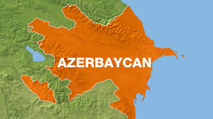
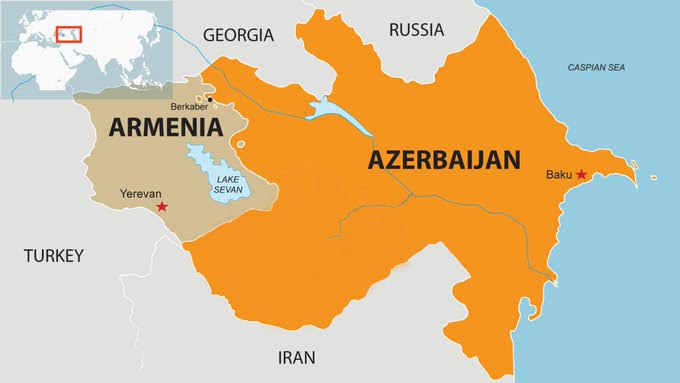
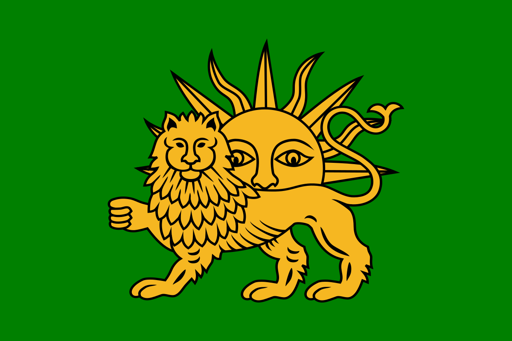
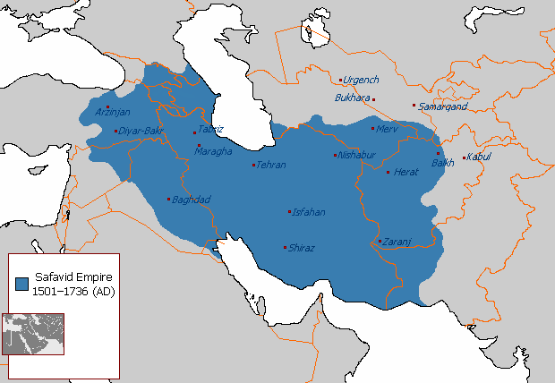
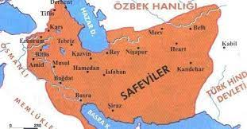

Azerbaycan və ya rəsmi adı ilə Azərbaycan Respublikası — Cənubi Qafqazda yerləşən dövlət. Azərbaycan Xəzər dənizi hövzəsinin qərbində yerləşir. Şimaldan Rusiya (Dağıstan),şimal-qərbdən Gürcüstan, qərbdən eRmənistan, cənub-qərbdən Türkiyə və cənubdan İran ilə həmsərhəddir.Azərbaycanın anklavı olan Naxçıvan Muxtar Türkiyə (türk. Türkiye) və ya rəsmi adı ilə Türkiyə Respublikası (türk. Türkiye Cumhuriyeti) — torpaqlarının əsas hissəsi Qərbi Asiya regionunun Kiçik Asiya yarımadasında, çox kiçik bir hissəsi isə Balkan yarımadasında yerləşən qitələrarası ölkə.Şimal-qərbdən Bolqarıstan, qərbdən Yunanıstan, şimal-şərqdən Gürcüstan, şərqdən Azərbaycan (Naxçıvan Muxtar Respublikası), İran, Ermənistan, cənubdan isə İraq və Suriya ilə həmsərhəddir. Ölkə üç tərəfdən dənizlə əhatə olunmuşdur. Qərbdən Egey dənizi, şimaldan Qara dəniz, cənubdan isə Aralıq dənizi ilə əhatələnmişdir. Bosfor boğazı, Mərmərə dənizi və Dardanel boğazı ölkənin Avropa və Asiya hissələrini bir-birindən ayırır.Paytaxt Ankara şəhəri olsa da, ölkənin əsas mədəni və iqtisadi mərkəzi, həmçinin ən böyük şəhəri İstanbuldur.Respublikası Ermənistanla şimal-şərqdə, İranla qərbdə və Türkiyə ilə şimal-qərbdən həmsərhəddir. Azərbaycan ərazisinin bir hissəsi (Dağlıq Qarabağ bölgəsi və ona bitişik 7 inzibati rayon) 1988–1994-cü illərdə Ermənistan tərəfindən işğal olunmuş və burda heç bir ölkə tərəfindən tanınmayan qondarma Dağlıq Qarabağ Respublikası yaradılmışdır.Uzunsürən sülh danışıqları nəticəsiz qalmış və 2020-ci il 27 sentyabrda Azərbaycan Respublikası Silahlı Qüvvələri tərəfindən əks-hücum əməliyyatı ilə torpaqların bir hissəsi azad edilmiş və 10 noyabr Bakı vaxtı ilə 01:00-da imzalanan üçtərəfli bəyanat ilə başa çatmışdır. Dövlət sərhədləri cənubdan İranla 765 km, Türkiyə ilə 15, şimaldan Rusiya ilə 391 km, şimal-qərbdən Gürcüstan ilə 471 km, qərbdən Ermənistan ilə 1007 km həmsərhəddir. Onun 825 km-i su sərhəddidir. Sahil xəttinin uzunluğu 713 km-dir.Azərbaycanın Xəzər dənizi sektorunda həmçinin Türkmənistan, Qazaxıstan, İran və Rusiya ilə sərhədə malikdir.





